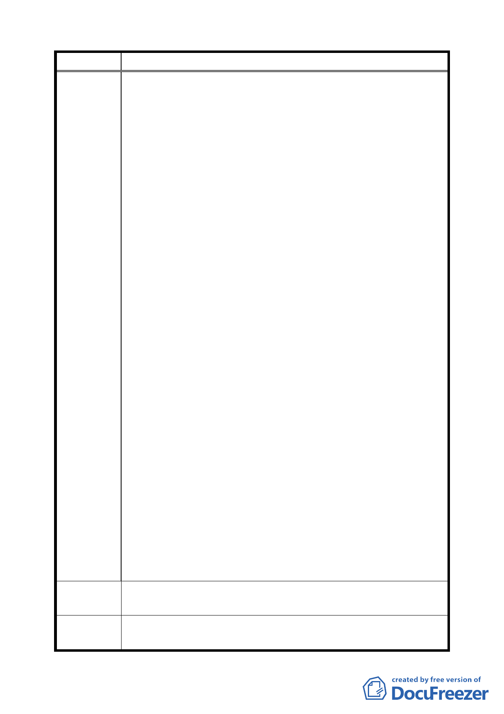

案名
建議辦法
委員會
決議
劃定臺北市中山區中山三小段 57 地號等 7 筆土地為更新單元
合法產權及使用執照，結構安全無虞，雖然老舊，仍可沿
續使用，稍加整修，可成大樓新貌，無影響市容景觀、環
境衛生、交通妨害等，係台北市早期都心大樓，促進周邊
繁榮，聲名遠播中南部及國外，世人多所懷念，保持原始
建築狀態，可為紀念性建築，本大樓屬性不同並無配合公
寓合建的必要性。
（2）本案其他地號要求合建者，可自行結合其他鄰近業者從事
都市之更新，始符合都市發展，促進都市土地有計畫之再
開發利用，復甦都市機能，改善居住環境，增進公共利益
為目標，故本大樓不適用該法的約束。
（3）本案劃定都市更新單元，係以私人利益為宗旨，企圖不軌，
初步介入購置大樓持分時，始終未知會或徵詢其他共有人
意見，相繼攔腰破壞原始持有人的權益損失補償契機，日
後覬覦合作，則須原始持分人的充分諒解。
（4）大樓原持分人內訌，緣因部分持分人財務拮据，積欠他共
有人房租、復水、復電費用、法院數度查封拍賣而衍生他
共有人權益損害，誣告案外人葉武昌先生被對方占其持分
而產生他共有人權益損害等紛爭未解，因而大樓閒置多
久。
（5）本人所造成他共有人之損失，原乘法拍機會，以共有人優
先承購機會作為彌補損失，但被當事人未徵得共有人意見
逕自向債權銀行以債權轉移方式強行攔腰取得持分，切斷
求償的契機。
（6）本地上物大樓與當事人郭敬恩居住所相鄰，閒置 16 年，
其間糾紛定非同小可，理應可為預知，介入動機可議。其
於最近一、二年始著手購置，旋即主動提議合議，頗具投
機氣息之私人商業利益，而非增進公共利益為目標，違背
都市更新計劃精神。
（7）申請參與劃定都市更新單元所有人，以郭敬恩及其家族占
絕大部分，其獲利高達十數億元之多，何來增進公共利益?
本人不同意劃定，請就陳情人陳情意見，酌予審查，勿為猾詐
奸商所利用得逞，假借都市更新名義詐取暴利。
本案更新單元劃定範圍照案通過。
69